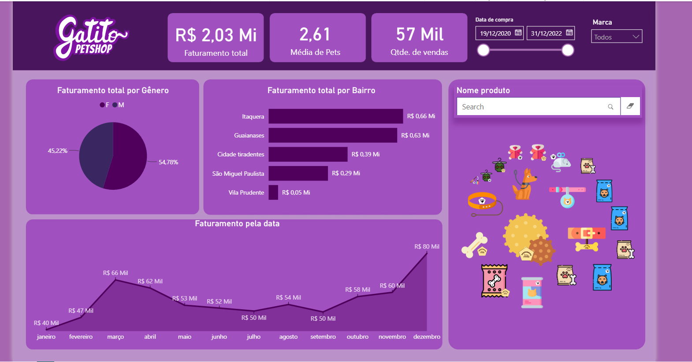
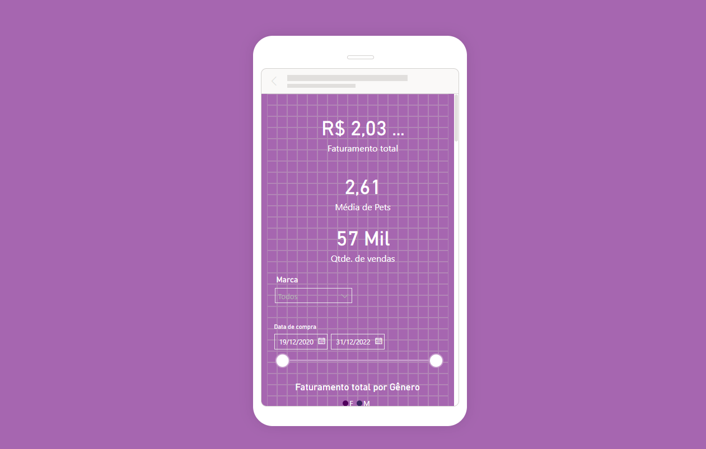

Dashboard interativo de vendas construído no Power BI: faturamento, comportamento de clientes e catálogo de produtos de um petshop fictício, do curso da Alura.


Três páginas de leitura rápida: os números do negócio, de onde vêm as vendas e o catálogo completo de produtos, com filtro por marca e período.
Faturamento quase dividido entre gêneros (54,78% M / 45,22% F), sem um público dominante claro.
Itaquera e Guaianases concentram o maior faturamento por bairro, enquanto Vila Prudente é o menor mercado.
Vendas mensais crescem de R$ 40 Mil em janeiro para R$ 80 Mil em dezembro, com pico intermediário em março.